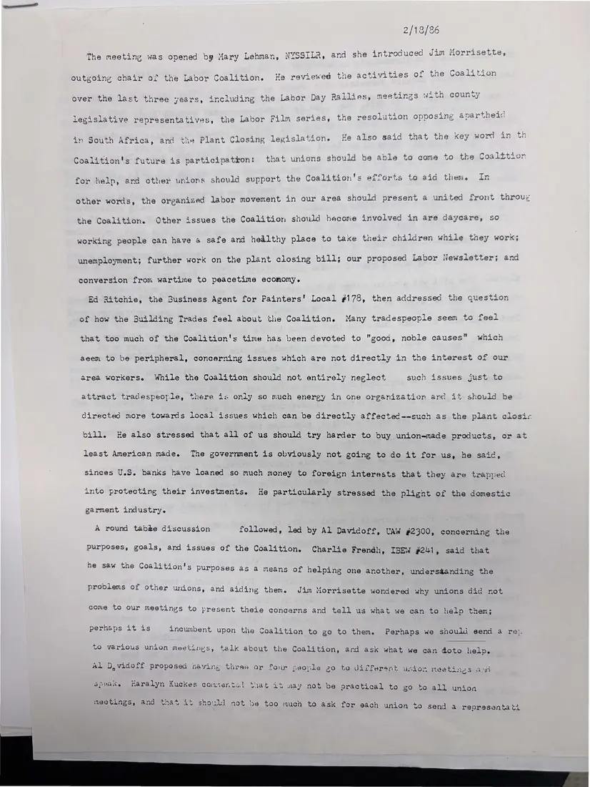
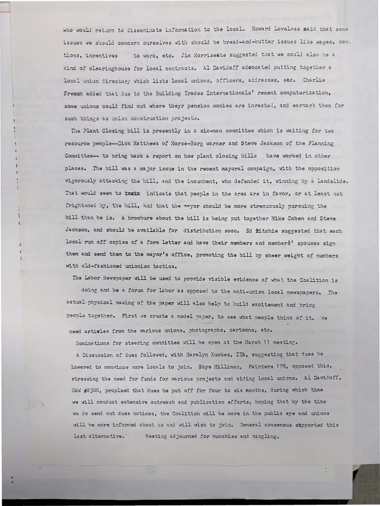

Minutes, 2 pages
Notes from the coalition's February 1986 gathering
[February 1986]Date inferred
Mary Lehman of NYSSILR opens the meeting. Outgoing chair Jim Morrissette reviews three years of activity, and speakers discuss the Building Trades, a union directory, the plant closing bill, the labor newspaper, and how to strengthen participation.
Download or cite this itemPages


(open zoom view)Read the page text (machine-read, mostly readable)
This text was generated automatically from the photograph and has not been corrected. The image is the authoritative record.
The meeting was opened by Mary Lehman, NYSSILR, and she introduced Jim Morrisette, outgoing chair of the Labor Coalition. He reviewed the activities of tne vo VGiqegt j : : ates ee ty over the last three years, including the Labor Day Rallies, meetings w2tn coun) . ‘ 4 3 aa : Pe 5744 ing anartheid legislative representatives, the Labor Film series, the resolution opposing é@parthei , ‘ glee in th in South Africa, and the Plant Closing legislation. He also said that the key pord 47 718) Coalition's future is participatron: that unions should be able to come to the Coalition : By i is & 4 23 1 for help, and other unions should support the Coalition's efforts to aid them. In other words, the organized labor movement in our area should present a united front throuz the Coalition. Other issues the Coalition should hecorie involved in are dayeare, so working people can have 4 safe and hedlthy place to take tueir children while they work; unemployment; further work on the plant closing bill; our proposed Labor Newsletter; and conversion from wartime to peacetime ecomomy. Ed Ritchie, the Business Agent for Painters’ Local #178, then addressed the question of how the Building Trades feel about the Coalition. Many tradespeople seem to feel that too much of the Coalition's time has been devoted to "good, noble causes" which aeem to be peripheral, concerning issues which are not directly in the interest of our area workers. While the Coalition should not entirely neglect such issues just to attract tradespeople, there is oniy so much energy in one organization and it should be directed more towards local issues which can be directly affected--such as the plant closic bill. He also stressed that ail of us should try harder to buy union-made products, or at least American made. The government is obviously not going to do it for us, he said, sinces U.S. banks have loaned so much money to foreign interests that they are trapped into protecting their investments. He particularly stressed the plignt of the domestic garment industry. A round tab@e discussion followed, led by Al Davidoff, UAW #2300, concerning the purposes, goals, and issues of the Coalition. Charlie Frendh, IBEW #241, said that he saw the Coalition's purposes as a means of helping one another, undersaanding the problems of other unions, and aiding them. Jim Morrisette wondered why unions did not come to our meetings to present theie concerns and tell us what we can to help them; erhaps it i 4 5 HA a ‘ perhaps it is incumbent upon the Coalition to go to them. Perhaps we should eend a re: to various union meetings, talk about the Coalition, ard ask what we can doto help. Al D,vicoff proposed naving three or four people zo sre ess SHAK to different union meetings ace maralyn Kuckes comiental tiat it way not be practical to go to all union meetings, and th at it should not be too much to ask for each union to send a reprasentati


(open zoom view)Read the page text (machine-read, mostly readable)
This text was generated automatically from the photograph and has not been corrected. The image is the authoritative record.
who would retarn to disseminate information to the local. Howard Loveless said that some issues we should concern ourselves with should be bread-and-butter issues lixe wages, con: tions, incentives to work, etc. Jim Morrisedte suggested taat we could also be a «ind of clearinghouse for local contracts. Al Davidoff adwocated putting together a local union directory which lists local unions, officers, addresses, etc. Charlie Frenah added that due to the Building Trades Internationals’ recent computerization, some unions could find out where theyr pansion monies are investe!, and earnar« them for such things as union construction projects. The Plant Closing bill is presently in a six-man committee which is waiting for two resource people--Dick Matthews of Morse-Borg warner and Steve Jackson of the Planning Committee-- to bring back a report on how plant closing bills . have worked in other places. The dill was a major issue in the recent mayoral campaign, with the opposition vigorously attacking the bill, and the incumbent, who defended it, winning by a landslide. That would seem to imix indicate that people in the area are in favor, or at least rot frightsned oy, the bill, and that the mayor should be more strenuously pursuing the bill than he is. A brochure about the bill is being put together Mike Cohen and Steve Jackson, and should be available for distribution soon. Ed Ritchie suggested that each local run off copies of a form letter and have their members and member$' spouses sign them and send them to the mayor's office, promoting the bill sy sheer weizht of numbers with old-fashioned unionism tactics. The Labor Newspaper will be used to provide visible evidence of what the Coalition is doing and be a forum for labor as opposed to the anti-union local newspapers. The actual physical making of the vaper will also help to build excitement and bring people together, First we create a model nanver, to see what people think of it. need artivgles from the various unions, photographs, cartoons, etc. Nominations for staering committee will be open at the March 11 meeting. A Discussion of dues followed, with Haralyn Kuckes, ITA, suggesting that dues be lowered to convince more locals to join. Skye Milliman, Painters 178, opposed this, stressing the need for funds for various projects and aiding local mions. Al Davidoff, UAW #2300, proplsed that dues be put off for four to six months, during which time we will conduct extensive outreach and publication efforts, hoping that by the time we do send out dues notices, the Coalition will be more in the public eye and unions will be more informed about us and will wish to join. General consensus shpported this last alternative. Meeting adjourned for munchies and mingling.
See something wrong, or recognize a person or event? Send a correction. If you hold rights in this item or think it should not be public, write to the same address.